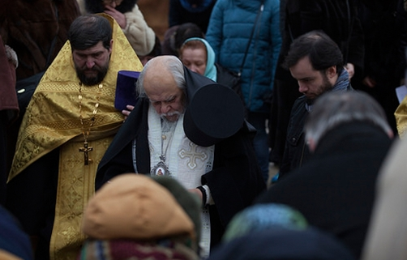
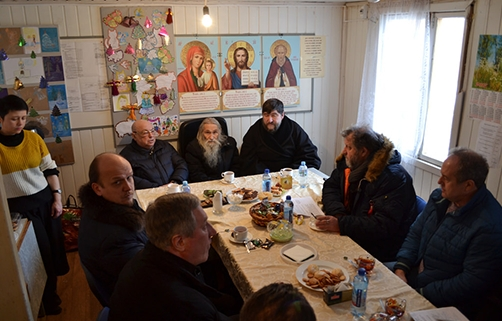

7 фев 2017
Освящение закладного камня
7 февраля 2016 года в 14.00 прихожане строящегося храма в честь
преподобного Саввы Сторожевского встречали владыку Пантелеимона,
епископа Орехово-Зуевского. Жители нашего района собрались на
чин освящения закладного камня в фундамент будущего храма. Это
поистине историческое событие для жителей нашего района и города
в целом. Храм преподобного Саввы Сторожевского великого
подвижника и ученика преподобного Сергия Радонежского, станет
единственным в нашей столице.

11 фев 2017
Визит Ресина В.И.
2 февраля 2017 года строительную площадку храма преподобного
Саввы Сторожевского в Измайлово посетили член комитета Госдумы
по земельным отношениям и строительству, советник Святейшего
Патриарха Московского и всея Руси Кирилла, Владимир Иосифович
Ресин. Вместе с ним строящийся храм посетил архимандрит Илия. В
ходе визита были отмечены значительные успехи строительства и
обсуждены ближайшие планы продолжения работ.


Молебен 29.01.2017
29 января Святая Православная Церковь отмечает поклонение
честным веригам апостола Петра.

Молебен 22.01.2017
2 января прихожане нашего храма собрались на традиционный
молебен преподобному Савве Сторожевскому.

Молебен 19.02.2017
19 февраля в этом году совпадает с неделей о Страшном Суде.
В этот день Святая Православная Церковь.

Молебен 19.02.2017
19 февраля в этом году совпадает с неделей о Страшном Суде.
В этот день Святая Православная Церковь.